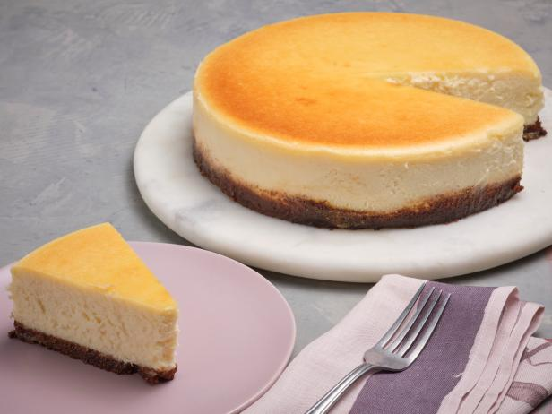

A finished picture of what your cheesecake should look like
A Plain, New York style cheesecake, baked to perfection. If you incorperate all the ingredients accordingly,
your final product should look the same, if not better than the picture above ;).
Here's what you'll need
Batter
- Four 8 ounce blocks of cream cheese
- One cup of sugar
- One cup of sour cream
- One teaspoon of pure vanilla extract
- Two tablespoons of lemon juice
- Three eggs
Crust
- 10 graham crackers
- 1/4 cup granulated sugar
- 5 tablespoons of melted butter
Above is a picture and recipe for a plain, New York style cheesecake. Cheesecake is a delicious desert that everyone will love and enjoy.
The instructions for this reipe will be provided down below.
Instructions
Crust
- First and formost, make sure all ingredients are room tempature.
- Mix all crust ingredients together until incorperated
- Place crust mixture into a springform pan
- Use something with a flot bottom to smoothen out the crust across the pan. Preferably the bottom of a measuring cup.
- Bake crust for 15-18 minutes (until golden brown)
Cheesecake batter
- Make sure the ingredients are room tempature
- Beat the ingredients togther with an electric mixer
- After the pan is lined with the graham cracker crust and the batter in incorperated, make a water bath.
- Fill a roasting pan up about a couple inches with hot water and place your springford pan in there.
- Bake cheesecake at 325 degrees F. for about an hour and 10 minutes.
- Leave cheesecake in oven for another hour to set cool down.
- After the initial cooldown, place cheesecake to in fridge for 4 hours minimun, to properly cool down.